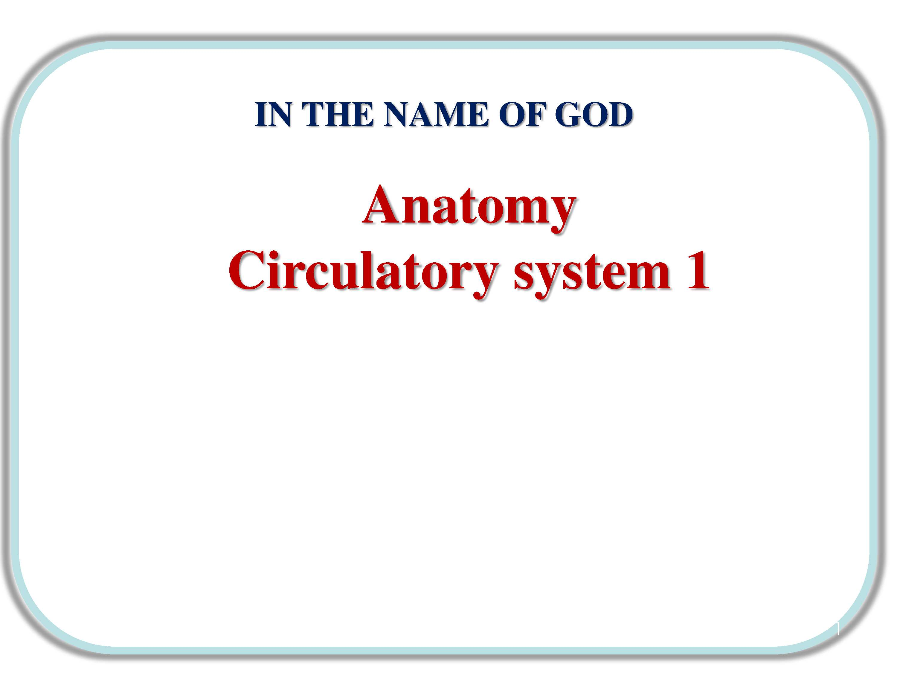
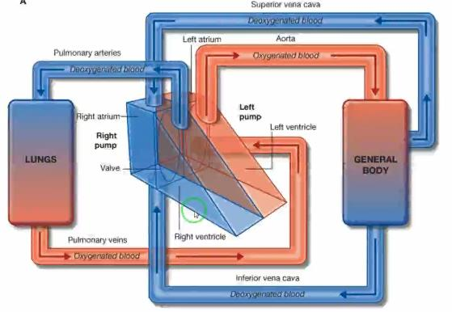
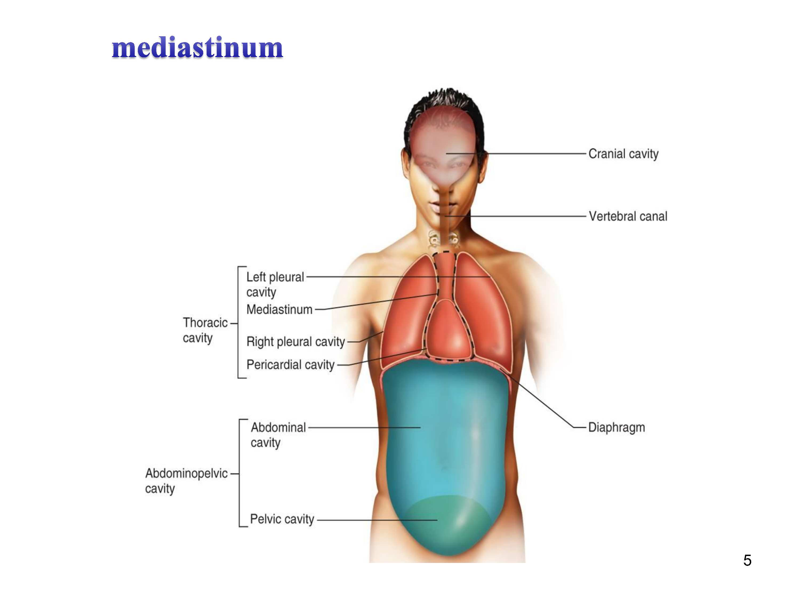
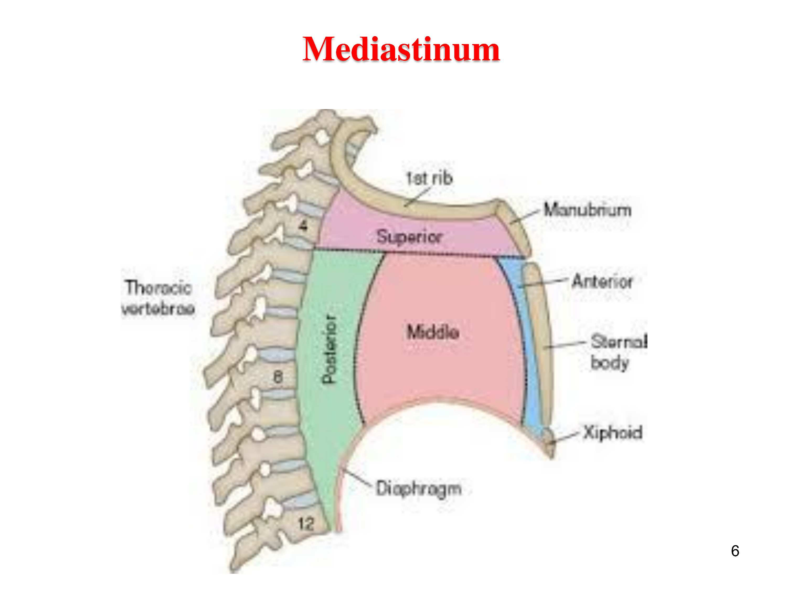
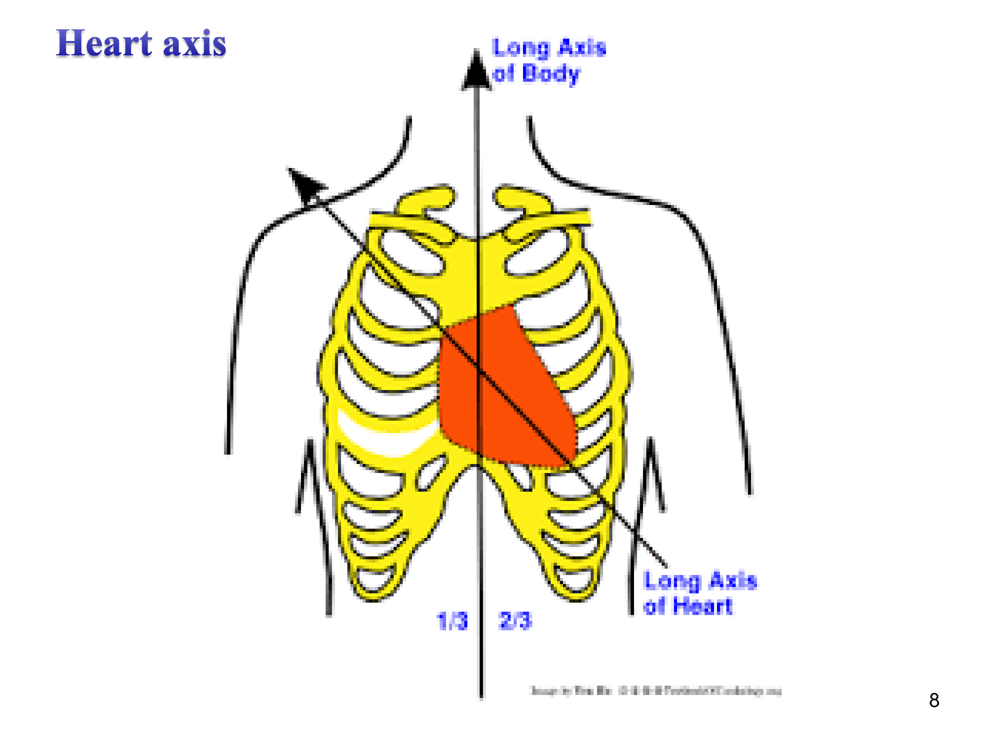
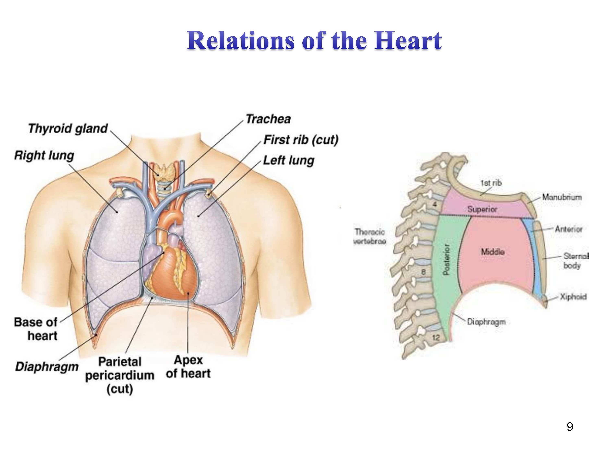
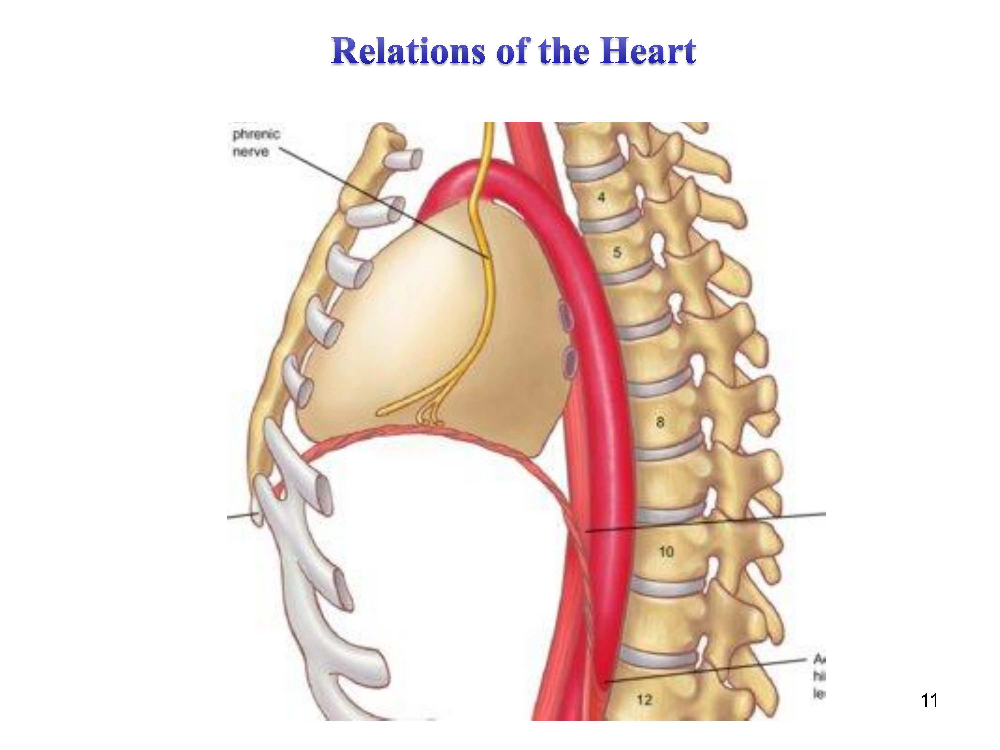

شبنم رضاپور
استخراج فایلها
این جزوه با استفاده از هوش مصنوعی تولید شده است. ممکن است شامل خطا یا برداشت نادرست باشد و نیازمند بررسی و بازبینی مجدد است.
این جلسه، نخستین بخش از مبحث دستگاه گردش خون (Circulatory System) است. پیشنیاز این جلسه، آشنایی مقدماتی با گردش خون و قلب در سطح دبیرستان است که استاد این پیشزمینه را مفروض گرفته است.

تصویر ۱ تصویر ۲
تصویر ۲
سرفصلهای مبحث Circulatory system در این جلسه:
گردش خون و قلب در دبیرستان خوانده شده است؛ در این جلسه با جزئیات بیشتری بررسی میشود.
گردش خون دو بخش دارد:
اصطلاح «خون تیره و روشن»:
قلب انسان چهار حفره دارد (در موجودات مختلف متفاوت است).
مسیر گردش خون:
درک بهتر — زنجیره مسیر خون در یک نگاه:
وریدهای بدن ← دهلیز راست (right atrium) ← بطن راست (right ventricle) ← پولمونری ترانک (pulmonary trunk) ← شریانهای پولمونری راست و چپ (right and left pulmonary arteries) ← ریهها ← وریدهای پولمونری (pulmonary veins) ← دهلیز چپ (left atrium) ← بطن چپ (left ventricle) ← آئورت (aorta) ← بدن

تصویر ۳ تصویر ۴
تصویر ۴
در نمای جانبی (lateral view) حفرههای بدن، دو حفره اصلی دیده میشوند:
نکات:

تصویر ۵در قفسه سینه سه فضا وجود دارد:
در همین دیاگرام:

تصویر ۶مدیاستین خود به چند قسمت تقسیم میشود (جزئیات آن لازم نیست و بعداً گفته میشود).
داخل مدیاستین قرار دارند:
حدود مدیاستین:
نکته: عصب فرنیک به دیافراگم میرود (بعداً نشان داده میشود). قلب در مدیاستین میانی (middle mediastinum) قرار گرفته است.
 تصویر ۷
تصویر ۷
برای قلب یک بیس (base) و یک اپکس (apex) تعریف میشود:
قرارگیری قلب در بدن:
نکته: وقتی میگویند «قلب در سمت چپ است»، یعنی بیشترین قسمت آن در سمت چپ است؛ بخشی هم در سمت راست، زیر استرنوم، قرار دارد.

تصویر ۸Heart axis / Long axis (محور بلند قلب).
اطراف قلب لایهای وجود دارد که در دبیرستان به آن «آبشامه» میگفتند: یک لایه فیبروسروز (fibrous serous layer) به نام پریکارد (pericardium). خود پریکارد لایههای مختلفی دارد که بعداً بررسی میشود.

تصویر ۹در شکل روابط قلب، ساختارهای زیر دیده میشوند:
 تصویر ۱۰
تصویر ۱۰
در تصویر قلب برداشتهشده، عروق و مجاورتهای بیس قلب دیده میشوند:

تصویر ۱۱وریدهای پولمونری (pulmonary veins): دو رگ در هر طرف (مجموعاً چهار رگ). با اینکه حاوی خون روشن (اکسیژندار) هستند، به آنها ورید (vein) گفته میشود، زیرا خون را به قلب وارد میکنند.
درک بهتر: ملاک نامگذاری «ورید»، جهت حرکت خون به سمت قلب است، نه اکسیژندار بودن خون؛ بنابراین رگهایی که خون روشن (اکسیژندار) را به قلب میآورند نیز ورید نامیده میشوند.
در پشت، قلب با اعصابی مجاورت دارد: شاخههایی که شبکهای را تشکیل میدهند و عصب فرنیک (phrenic nerve) را ایجاد میکنند؛ مری (esophagus) نیز در پشت قلب قرار دارد.
وریدهای کوچکتر بعداً توضیح داده میشوند.
در شکل آخر (برش / نقاشی)، نحوه قرارگیری قلب روی دیافراگم (diaphragm) دیده میشود؛ مری و عصب فرنیک (phrenic nerve) نیز دیده میشوند. عصب فرنیک در دو طرف قلب به دیافراگم میرسد و دیافراگم را عصبدهی (innervation) میکند.
تعاریف اصلی این جلسه بهصورت زمینهای (contextual) در بخش «متن اصلی جزوه» ارائه شدهاند. در این بخش فقط فهرست فشرده آنها آمده است:
نکته مهم اپکس قلب (نوک قلب) در فضای بین دندهای پنجم (fifth intercostal space) قرار دارد. این مورد تأکید صریح استاد بوده است.
مسیر خون وریدی (venous blood) از وریدهای بدن تا خروج از قلب به آئورت را بهترتیب بنویسید. پاسخ: وریدهای بدن ← دهلیز راست (right atrium) ← بطن راست (right ventricle) ← ریهها (گردش خون ریوی) ← دهلیز چپ (left atrium) ← بطن چپ (left ventricle) ← آئورت (aorta) (گردش خون عمومی).
حدود قدامی و خلفی مدیاستین، محتویات اصلی آن، و جایگاه قلب را نسبت به آن بیان کنید. پاسخ: حد قدامی = استرنوم (sternum)؛ حد خلفی = مهرهها (vertebrae). محتویات = عروق بزرگ (عروقی که از قلب وارد و خارج میشوند)، عصب فرنیک (phrenic nerve)، عصب واگوس (vagus nerve)، نای (trachea)، مری (esophagus). قلب در مدیاستین میانی (middle mediastinum) قرار دارد.
اپکس قلب (نوک قلب) در کدام ناحیه قرار دارد؟
کدام گزینه بهترتیب، مسیر صحیح گردش خون را نشان میدهد؟
⚠ گزینه ناقص سؤال چهارگزینهای گزینههای سؤال دوم مبحث سوالات تستی در منبع، ناقص ضبط شده است (گزینه «ب» و پاسخ صحیح/بقیه گزینهها کامل نیستند). محتوای ناقص عیناً حفظ شده است. وضعیت: نیازمند بررسی
مثال مثال «خون تیره و روشن»: خون تیره = خون کماکسیژن (deoxygenated)؛ خون روشن = خون پراکسیژن (oxygenated).
مثال مثال «ورید با وجود خون روشن»: وریدهای پولمونری (pulmonary veins) خون روشن (اکسیژندار) حمل میکنند، اما به دلیل انتقال خون به سمت قلب، ورید (vein) نامیده میشوند.
| گردش خون ریوی (pulmonary circulation) | گردش خون عمومی (systemic circulation) | |
|---|---|---|
| مبدأ مسیر | بطن راست (right ventricle) | بطن چپ (left ventricle) |
| مسیر | از بطن راست به ریهها | از بطن چپ به آئورت (aorta) و کل بدن |
| خونی که حمل میکند | خون تیره / کماکسیژن (deoxygenated) | خون روشن / پراکسیژن (oxygenated) |
| حفره اصلی | زیرحفره | محتویات |
|---|---|---|
| حفره پشتی بدن (dorsal body cavity) | حفره کرانیال (cranial cavity) | مغز (brain) |
| حفره ورتبرال (vertebral cavity) | نخاع (spinal cord) | |
| حفره جلویی بدن (ventral |